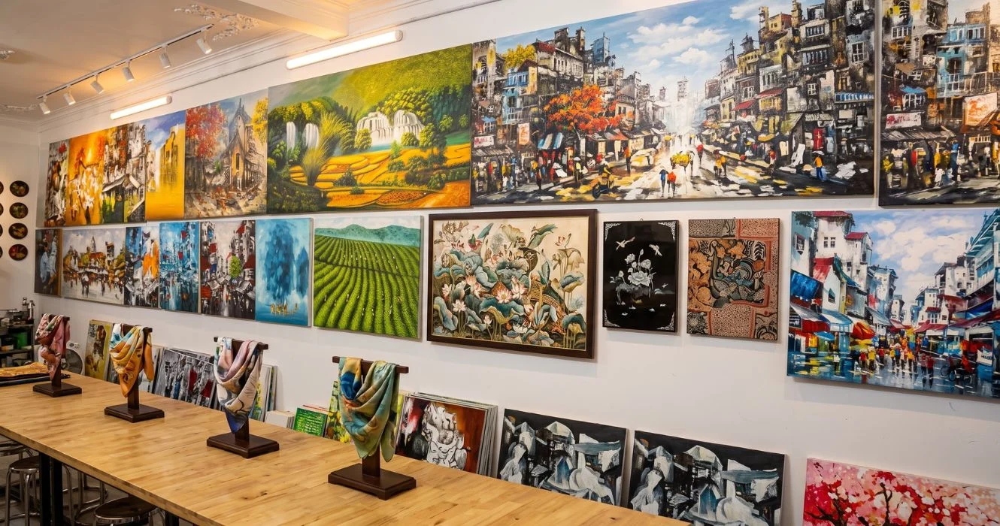
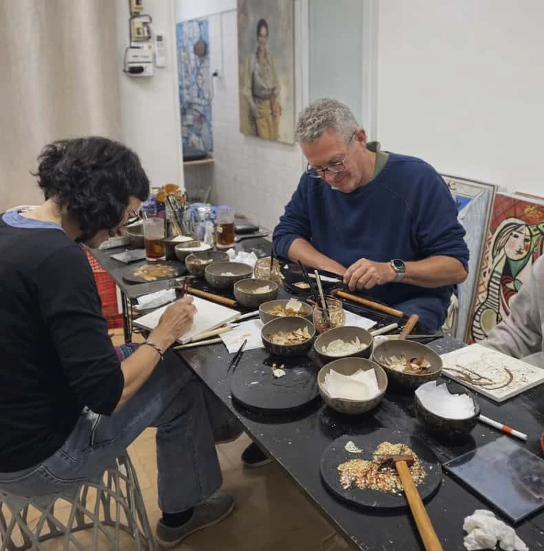
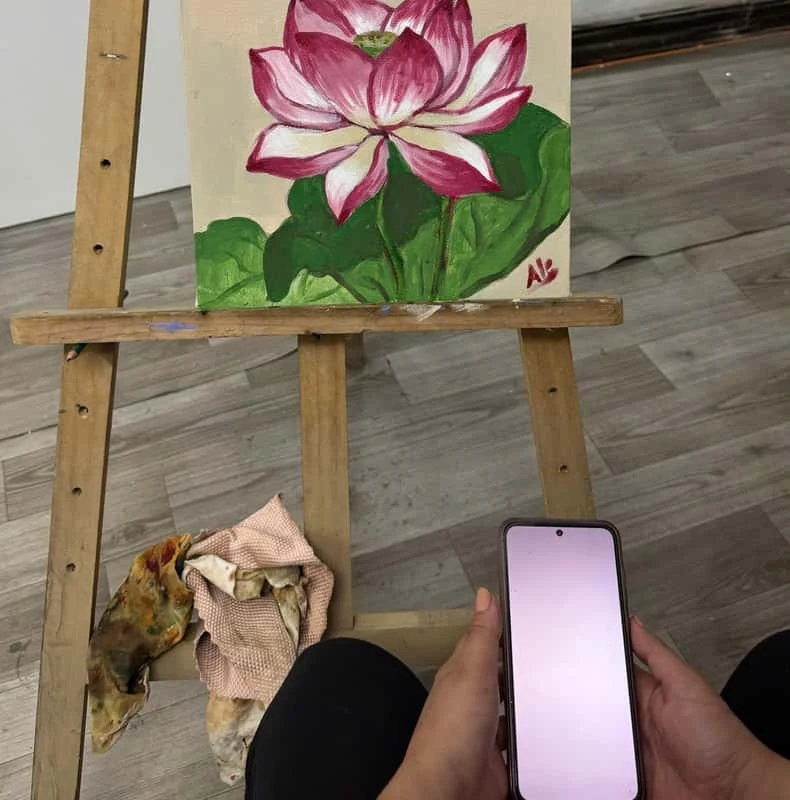
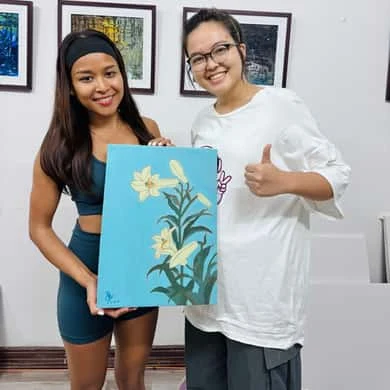

Accessories & gifts
Hand-painted horn accessories and small wooden animals.
- Horn accessories with lacquer painting
- Wooden animal figurines
Discover Vietnamese crafts, try a hands-on activity and meet SOULINA at Zone B. Continue your visit with an art workshop in Hanoi’s Old Quarter.


Hanoi Festival of Creative Design 2026 brings together heritage and contemporary creativity under the theme “Thăng Long Kẻ Nghệ.” Visit SOULINA at the festival to browse handmade pieces and try a short creative activity.
Festival websiteMake a short stop at the festival, or join an art workshop at our Old Quarter studio.
Decorate a clay figurine or print a postcard.
Allow 15–20 minutesExplore festival activities Studio · 27 Hang BacCreate a small artwork with guided decorative techniques.
Allow about 1–2 hoursExplore lacquer art Studio · 27 Hang BacTry drawing, composition and color with an artist’s guidance.
Confirm duration with SOULINAExplore the painting classNeed help choosing? Tell us your preferred date and group size.

SOULINA brings together original artworks, lacquer pieces, silk and handmade gifts in Hanoi’s Old Quarter. You can browse the collection or spend time making something of your own in an art workshop.
At this year’s festival, explore a selection of our products and try a short craft activity at the booth. For a longer experience, join us at 27 Hang Bac for a lacquer workshop or a painting class.
More about SOULINAExplore three collections, from small handmade gifts to lacquer art and Batik textiles. Ask us about the pieces you would like to see during your visit.
Hand-painted horn accessories and small wooden animals.
Lacquer paintings and decorative plates for your collection.
T-shirts and silk scarves dyed using Batik techniques.
Looking for a particular piece? Ask SOULINA on Zalo
Stop by Zone B for a short hands-on experience. Decorate a clay figurine or print a postcard, with around 15–20 minutes per visitor.
Choose your colors and decorate a clay tò he figurine in your own style.
Try the printing process and create a postcard during your stop at the booth.
These short activities take place at the festival. The two art workshops below take place separately at 27 Hang Bac.
Ask about booth activitiesMake a small lacquer artwork with guided help at 27 Hang Bac. Explore decorative techniques using materials such as shell fragments, then visit the gallery to see finished pieces.

Work on a wooden surface, follow an instructor’s demonstration and add your own colors and textures. Beginners are welcome.
Some pieces need extra drying time. Ask when your work will be ready to collect.
View lacquer workshop Opens the SOULINA listing on GetYourGuide.Try drawing and painting at SOULINA with guidance suited to beginners. Explore shapes, composition and color while developing your own picture.
See the GetYourGuide listing for current session details, or message us before booking.


Browse crafts and try a short activity at the festival. Join the lacquer workshop or painting class separately at our Old Quarter studio.
A booth map will be added
once the location is confirmed.
The entrance is inside a small alley. Confirm your session and arrival instructions before visiting.
Ask for directionsClay figurine decorating and postcard printing take place at the festival booth. The lacquer workshop and painting class are separate experiences at 27 Hang Bac in Hanoi’s Old Quarter.
Open the relevant GetYourGuide listing to check session availability, or message SOULINA with your preferred date and number of people. Ask us separately about arrangements for the festival activities.
Both studio workshops welcome beginners. Your instructor will guide you through the activity. Check the selected listing for age limits and other participation conditions.
Check the individual workshop listing for the current price, included materials and booking terms. Festival activity fees and times will be added when confirmed.
Tell us when you would like to come, how many people are joining and which activity you are interested in.
✳ SOULINA TẠI LỄ HỘI THIẾT KẾ SÁNG TẠO HÀ NỘI 2026
Hẹn gặp bạn tại SOULINA. Khám phá thủ công Việt, chạm vào những chất liệu quen và tự tay làm nên điều mới.
Bước vào thế giới SOULINA
TỪ CHẤT LIỆU ĐẾN CẢM XÚC
SOULINA kết nối nghệ thuật, quà tặng thủ công và những trải nghiệm sáng tạo. Từ nét sơn mài đến sắc lụa, mỗi chất liệu mở ra một cuộc gặp với văn hóa Việt.
Câu chuyện tiếp nối tại 27 Hàng Bạc, với workshop vẽ sơn mài dành cho buổi ghé thăm 1–2 giờ.
Đọc câu chuyện SOULINADiscover Vietnamese crafts, try a hands-on activity and meet SOULINA at Zone B. Continue your visit with an art workshop in Hanoi’s Old Quarter.
Hanoi Festival of Creative Design 2026 brings together heritage and contemporary creativity under the theme “Thăng Long Kẻ Nghệ.” Visit SOULINA at the festival to browse handmade pieces and try a short creative activity.
Festival websiteMake a short stop at the festival, or join an art workshop at our Old Quarter studio.
Decorate a clay figurine or print a postcard.
Allow 15–20 minutesExplore festival activities Studio · 27 Hang BacCreate a small artwork with guided decorative techniques.
Allow about 1–2 hoursExplore lacquer art Studio · 27 Hang BacTry drawing, composition and color with an artist’s guidance.
Confirm duration with SOULINAExplore the painting classNeed help choosing? Tell us your preferred date and group size.
SOULINA brings together original artworks, lacquer pieces, silk and handmade gifts in Hanoi’s Old Quarter. You can browse the collection or spend time making something of your own in an art workshop.
At this year’s festival, explore a selection of our products and try a short craft activity at the booth. For a longer experience, join us at 27 Hang Bac for a lacquer workshop or a painting class.
More about SOULINAExplore three collections, from small handmade gifts to lacquer art and Batik textiles. Ask us about the pieces you would like to see during your visit.
Hand-painted horn accessories and small wooden animals.
Lacquer paintings and decorative plates for your collection.
T-shirts and silk scarves dyed using Batik techniques.
Looking for a particular piece? Ask SOULINA on Zalo
Stop by Zone B for a short hands-on experience. Decorate a clay figurine or print a postcard, with around 15–20 minutes per visitor.
Choose your colors and decorate a clay tò he figurine in your own style.
Try the printing process and create a postcard during your stop at the booth.
These short activities take place at the festival. The two art workshops below take place separately at 27 Hang Bac.
Ask about booth activitiesMake a small lacquer artwork with guided help at 27 Hang Bac. Explore decorative techniques using materials such as shell fragments, then visit the gallery to see finished pieces.
Work on a wooden surface, follow an instructor’s demonstration and add your own colors and textures. Beginners are welcome.
Some pieces need extra drying time. Ask when your work will be ready to collect.
View lacquer workshop Opens the SOULINA listing on GetYourGuide.Try drawing and painting at SOULINA with guidance suited to beginners. Explore shapes, composition and color while developing your own picture.
See the GetYourGuide listing for current session details, or message us before booking.
Browse crafts and try a short activity at the festival. Join the lacquer workshop or painting class separately at our Old Quarter studio.
A booth map will be added
once the location is confirmed.
The entrance is inside a small alley. Confirm your session and arrival instructions before visiting.
Ask for directionsClay figurine decorating and postcard printing take place at the festival booth. The lacquer workshop and painting class are separate experiences at 27 Hang Bac in Hanoi’s Old Quarter.
Open the relevant GetYourGuide listing to check session availability, or message SOULINA with your preferred date and number of people. Ask us separately about arrangements for the festival activities.
Both studio workshops welcome beginners. Your instructor will guide you through the activity. Check the selected listing for age limits and other participation conditions.
Check the individual workshop listing for the current price, included materials and booking terms. Festival activity fees and times will be added when confirmed.
Tell us when you would like to come, how many people are joining and which activity you are interested in.
MỘT CUỘC HẸN GIỮA LÒNG HÀ NỘI · 2026
Giữa dòng chảy văn hóa và di sản, có một nơi để bạn dạo xem, tự tay sáng tạo và tìm thấy một chút Hà Nội cho riêng mình.
Khám phá hành trình của bạn01 / HÀNH TRÌNH SOULINA
SOULINA là điểm gặp của nghệ thuật Việt, sản phẩm thủ công và những người yêu sáng tạo. Bạn có thể bắt đầu bằng một vòng dạo xem, rồi chọn trải nghiệm mình thích.
Khám phá phụ kiện sừng vẽ sơn mài, thú gỗ, đĩa và tranh sơn mài, áo phông và khăn lụa Batik.
Vẽ màu trang trí tò he đất hoặc tự in bưu thiếp. Một khoảng dừng ngắn dành cho đôi tay và trí tưởng tượng.

Trải nghiệm workshop vẽ sơn mài tại SOULINA. Lịch, phí và cách đăng ký đang được cập nhật.
Lịch tham gia, số gian và thông tin đăng ký sẽ được bổ sung sau khi xác nhận.